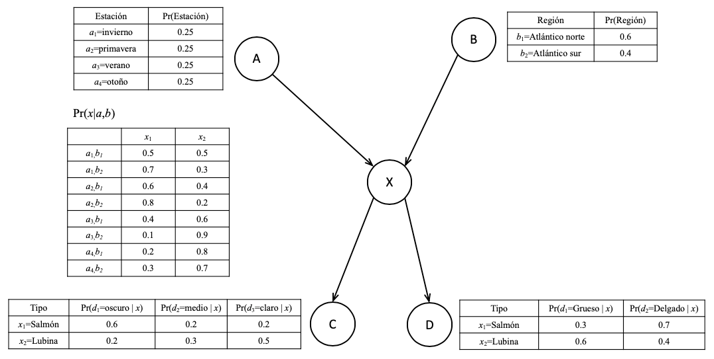

Redes Bayesianas de Creencias¶
Descripción del problema¶
En cierto puerto solo es posible pescar salmones o lubinas. Se desea construir un sistema que permita determinar a cuál de estos dos tipos pertence un espécimen determinado, con base en la siguiente información:
La estación del año (\(a_1\) = invierno, \(a_2\) = primavera, \(a_3\) = verano, \(a_4\) = otoño).
La región de pesca en que se obtuvo el espécimen (\(b_1\) = Atlántico norte, \(b_2\) = Atlántico sur).
La tonalidad del espécimen (\(c_1\) = oscuro, \(c_2\) = medio, \(c_3\) = claro).
El grosor del espécimen (\(d_1\) = grueso, \(d_2\) = delgado).
Finalmente, \(x_1\) = salmon y \(x_2\) = lubina.
Un experto estimó las siguientes probabilidades para cada una de las variables consideradas:

Solución¶
Red Bayesiana de Creencias¶
En este caso se usará una red de bayesiana de creencia. Este tipo de red permite explotar el conocimiento (o información estructural) sobre la dependencia entre las variables involucradas. Para el caso analizado:
El tipo de pez depende de la región y de la estación del año.
La tonalidad y el grosor son dependientes del tipo de pez pero no de la región o de la estación del año.
Este tipo de causalidad es representada mediante la red de creencias bayesianas. En ella, los nodos (o unidades) representan las variables involucradas en el problema, las cuales tomán valores discretos. Las flechas indican la influencia causal de un nodo sobre otro. En el gráfico presentado, los nodos A y B son padres del nodo X, mientras que los nodos C y D son hijos del nodo X.
Las relaciones entre nodos representan causlidad, y por tanto, pueden ser representadas mediante probabilidades condicionales. Es así, como el valor que toma X (el tipo de espécimen) es condicional a la estación del año y a la región donde se realiza la pesca. De esta forma,
pero el tono y el grosor del pez es dependiente únicamente del tipo de espécimen, por lo que:
y
Valores de las probabilidades¶
Los valores de las probabilidades asignadas a cada estado de cada variable son basadas en la observación de su comportamiento. Por ejemplo:
El barco pesca todo el año, por lo que las probabilidades para cada estación son iguales.
El barco pasa más tiempo en el norte que en el sur, por lo que la probabilidad es de 0.6 y 0.4 respectivamente.
Es mucho más frecuente que el salmon sea delgado que grueso (0.7 y 0.3 respectivamente), y que la lubina sea más delgada que gruesa (0.6 y 0.4).
El salmón tiende a ser de más de tono oscuro que medio o claro (0.6, 0.2 y 0.2 respectivamente); y la lubina tiende a ser de tono más claro que oscuro o medio (0.5, 0.2 y 0.3).
y así sucesivamente.
Cómputo básico¶
A partir de los supuestos anteriores es posible cómputar muchas cantidades de interés. Por ejemplo, la probabilidad de que el pez provenga del Atlántico norte en el verano y que sea una lubina oscura y delgada es:
[1]:
0.25*0.6*0.4*0.5*0.4
[1]:
0.012
Evidencia¶
La evidencia son los valores que pueden tomar las variables. De esta forma, es posible construir un clasificador que compute la probabilidad de que el pez sea un salmon o una lubina a partir de los valores que toman las demás variables, tal como se hizo en el párrafo anterior. El tipo de pez se asgina a la clase con mayor probabilidad tal como ya se ha indicado.